Modulo 4 — Progettazione didattica con l'IA
Il ciclo completo della progettazione di un'unità didattica con il supporto dell'IA: definizione degli obiettivi, strutturazione delle attività, produzione dei materiali, valutazione.
Obiettivi del modulo¶
- Strutturare un'unità didattica con il supporto dell'IA
- Definire obiettivi di apprendimento misurabili
- Produrre materiali didattici differenziati
- Costruire rubriche valutative personalizzate
- Applicare i principi UDL nella progettazione
Ascoltare · Podcast¶
Podcast generato come «Audio Overview». Ideale per fruizione in mobilità.
Guardare · Slide¶
Presentazione del modulo. Usa le frecce per scorrere, clicca sull'immagine per ingrandire.
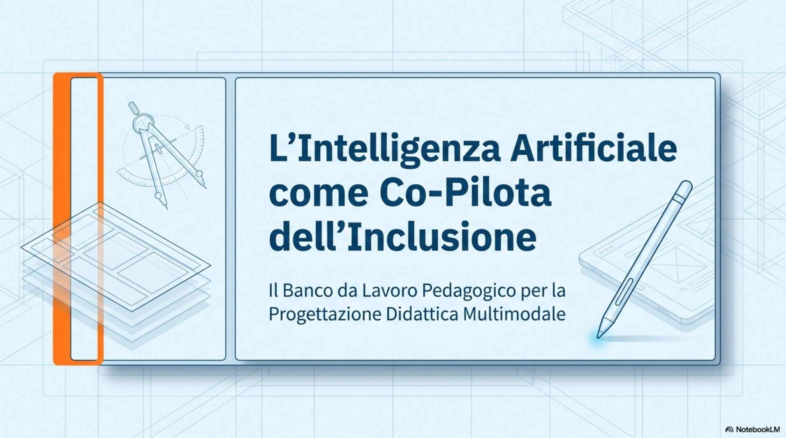
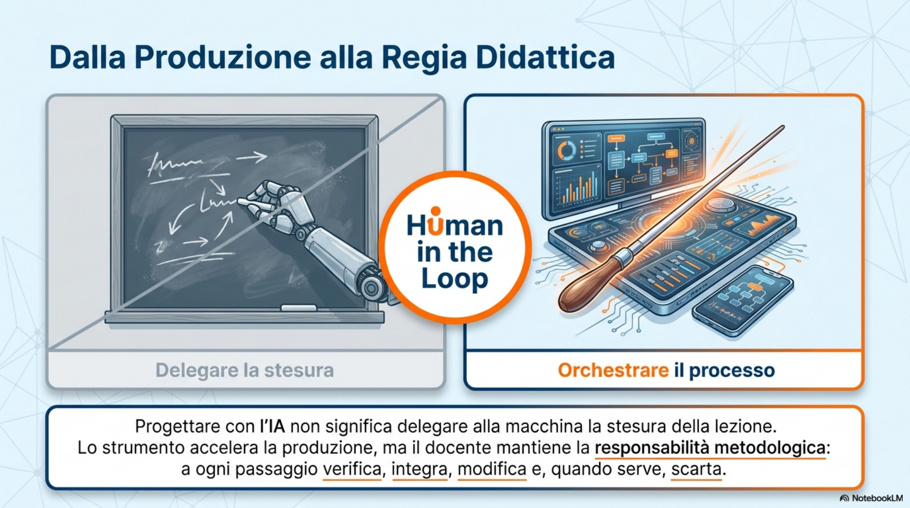
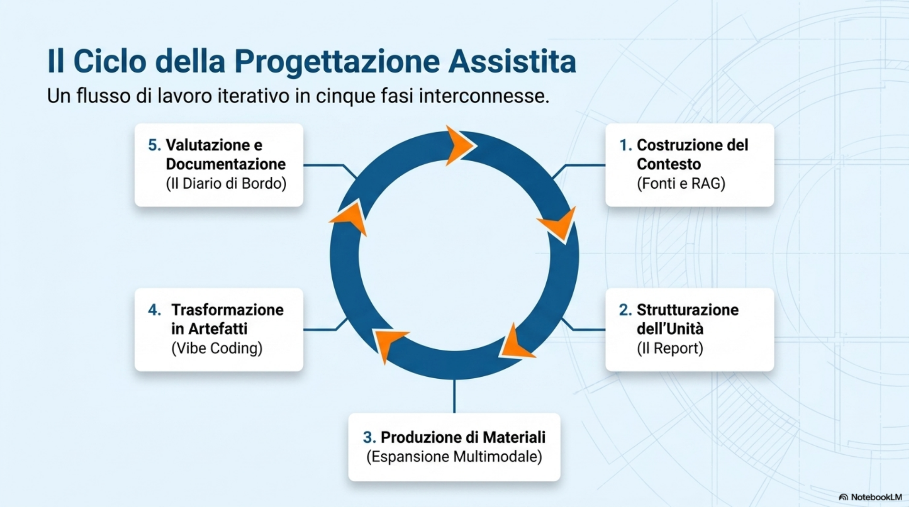
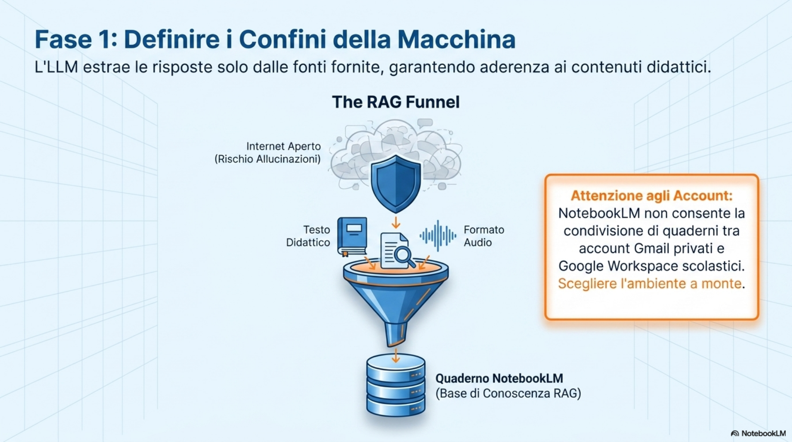
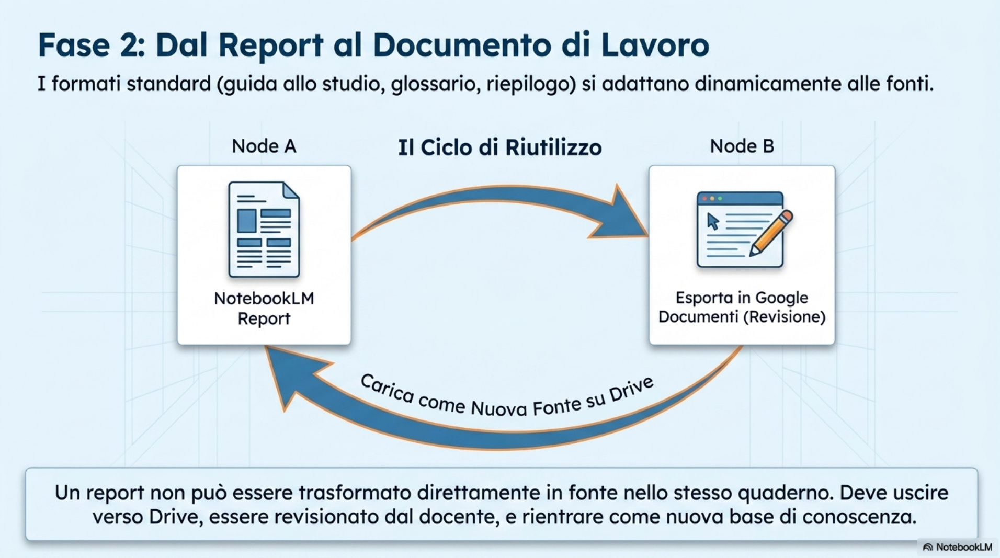
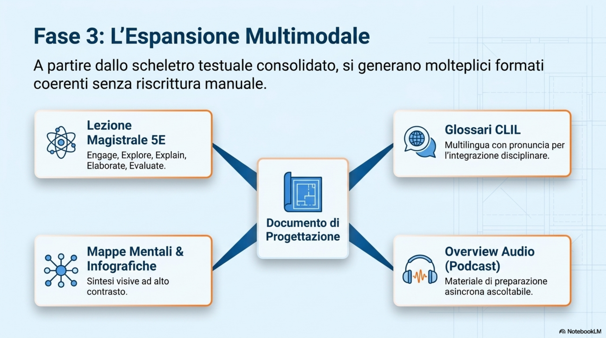
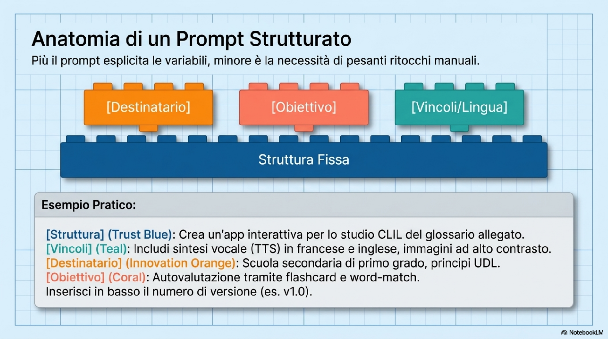

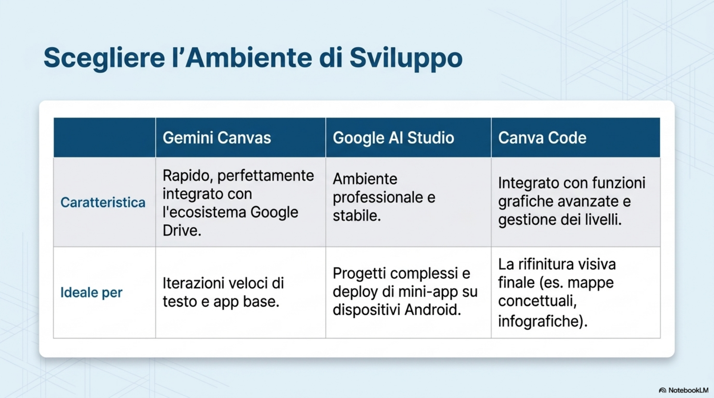
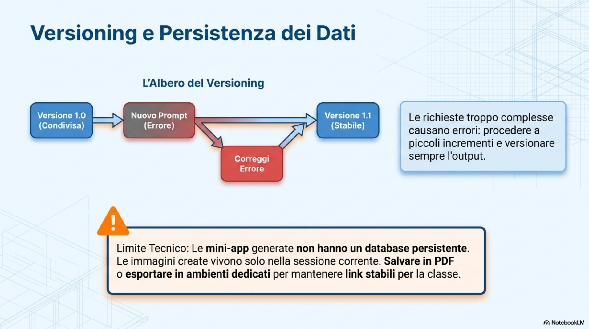
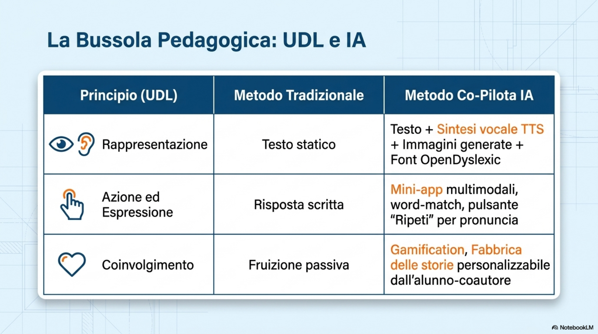
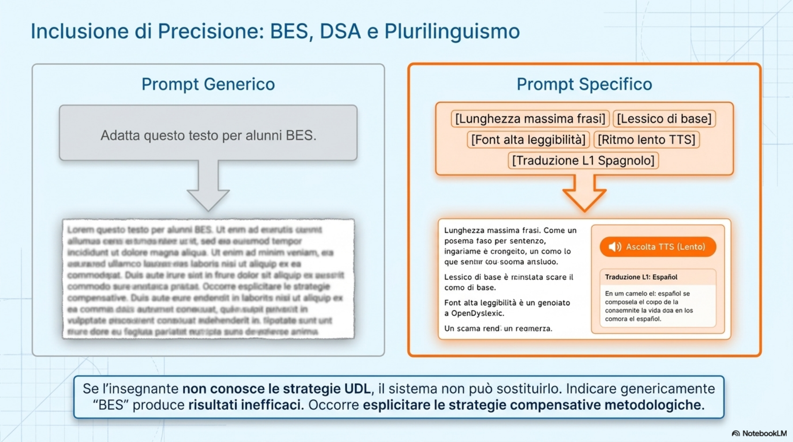
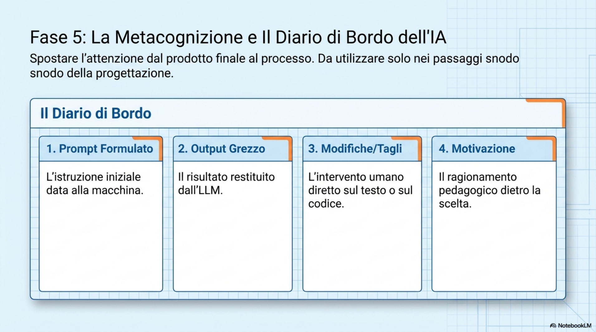
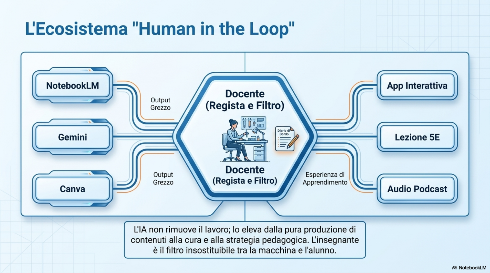
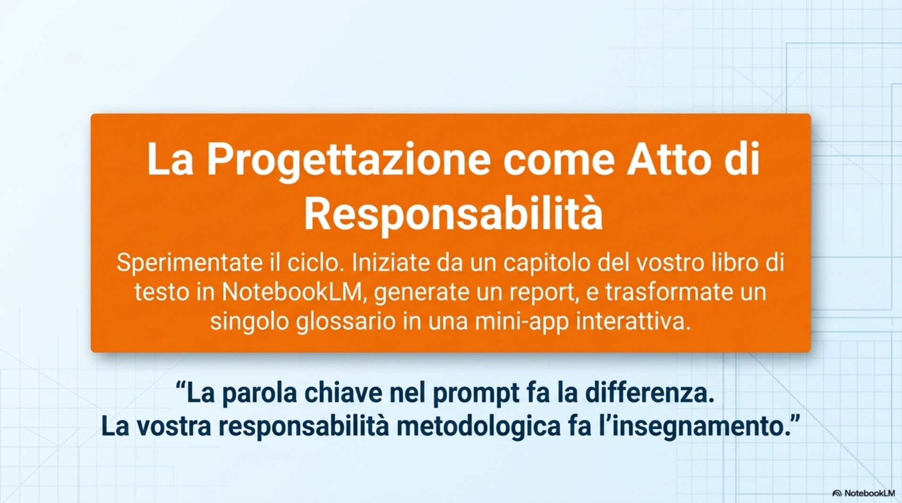
Leggere · Dispensa¶
Corso di formazione
IA come co-pilota nella progettazione della didattica inclusiva
Dispensa del Modulo 3
Progettazione didattica con l'IA
Sessione del 25 maggio 2026
Destinatari: docenti di scuola primaria e secondaria di I grado
Documento didattico ad uso interno del corso
Indice¶
1. Obiettivi formativi
2. Il ciclo della progettazione didattica con l'IA: panoramica
3. Fasi operative della progettazione
3.1 Definire gli obiettivi e raccogliere le fonti
3.2 Strutturare l'unita didattica: dal report al documento di lavoro
3.3 Produrre materiali con i report di NotebookLM
3.4 Trasformare i materiali in artefatti interattivi (vibe coding)
3.5 Valutare il processo: dal prodotto al diario di bordo
4. Prompt-template ed esempi commentati
5. PEI\ per disabilità), distinta dalla \differenziazione\ di gruppo." tabindex="0">Personalizzazione e inclusione: applicare l'Universal Design for Learning
6. Domande dal gruppo
7. Sintesi e punti di attenzione
8. Glossario
9. Per approfondire
1. Obiettivi formativi¶
Il Modulo 3 chiude il percorso operativo del corso sul versante della progettazione didattica. Dopo aver introdotto, nei moduli precedenti, il quadro concettuale dell'IA come copilota professionale e gli strumenti di base (in particolare NotebookLM e i large language model conversazionali), in questo modulo si affronta in modo organico la domanda: in che modo l'intelligenza artificiale puo affiancare il docente nella progettazione di una lezione, di un'unita didattica o di un set di materiali di studio?
Al termine della sessione il partecipante dovrebbe essere in grado di:
-
riconoscere le fasi di un flusso di lavoro di progettazione assistita dall'IA, dalla raccolta delle fonti alla restituzione di un artefatto didattico;
-
utilizzare i report personalizzati di NotebookLM per generare guide di studio, manuali metodologici e glossari a partire dai libri di testo o dai materiali in adozione;
-
trasformare un documento di progettazione in un artefatto interattivo (presentazione, infografica, mini-app) tramite Gemini Canvas, Google AI Studio o Canva;
-
applicare i principi dell'Universal Design for Learning (UDL) per progettare materiali multimodali utili anche ad alunni con BES e DSA;
-
costruire prompt di progettazione attenti a obiettivi, destinatario, vincoli e formato di output;
-
gestire in modo critico l'output della macchina, documentando le proprie scelte di accettazione, modifica o riscrittura.
Coerentemente con la finalita applicativa del modulo, la sessione finale del corso non prevede un project work strutturato secondo modelli UDA classici: ai partecipanti viene chiesto di socializzare, attraverso la bacheca Padlet del corso, una bozza di lesson plan, una serie di materiali prodotti, una mini-app o un'infografica realizzata con l'IA, mostrando il percorso seguito piu che la conformita a uno schema.
2. Il ciclo della progettazione didattica con l'IA: panoramica¶
La proposta metodologica del modulo si fonda sull'idea che progettare con l'IA non significhi delegare alla macchina la stesura della lezione, ma orchestrare un ciclo iterativo in cui il docente mantiene la regia. Il flusso di lavoro presentato puo essere descritto in cinque fasi interconnesse, che si rincorrono in modo non rigidamente sequenziale.
Costruzione del contesto. selezione delle fonti pertinenti (libri di testo, articoli, slide, registrazioni di lezione), caricamento in un quaderno di NotebookLM o equivalente, definizione del profilo dell'interlocutore (chi siamo, chi sono gli alunni, di che disciplina si parla).
Strutturazione dell'unita di lavoro. generazione di un report o di una guida di studio che funge da scheletro della lezione o dell'unita; il report viene esportato in Google Documenti e diventa esso stesso una nuova fonte riutilizzabile.
Produzione di materiali. a partire dal documento strutturato si generano glossari, mappe, infografiche, presentazioni, quiz, lezioni magistrali o materiali CLIL multilingua.
Trasformazione in artefatti interattivi. tramite ambienti di vibe coding (Gemini Canvas, Google AI Studio, Canva Code) i materiali statici diventano mini-applicazioni interattive con audio, immagini e feedback.
Valutazione e documentazione. il docente, con i propri alunni, tiene un diario di bordo che registra prompt usati, output grezzo, modifiche apportate e motivazioni delle scelte; è la chiave dell'uso etico e formativo dello strumento.
Il filo conduttore che tiene insieme le cinque fasi è il principio human in the loop: a ogni passaggio il docente verifica, integra, modifica e, quando serve, scarta. Lo strumento accelera la produzione ma non sostituisce la responsabilita progettuale.
3. Fasi operative della progettazione¶
3.1 Definire gli obiettivi e raccogliere le fonti¶
Obiettivo della fase
Trasformare un'idea didattica in un contesto strutturato che la macchina possa elaborare. Cio significa identificare gli obiettivi di apprendimento, il pubblico (classe, eta, presenza di alunni BES/DSA, sezione plurilingue), i vincoli (tempo, strumenti disponibili) e selezionare le fonti su cui fondare la generazione: capitoli del libro di testo, articoli, registrazioni audio della propria lezione, slide gia preparate.
Strumento di riferimento
Il quaderno di NotebookLM è lo spazio privilegiato per questa fase: tutte le fonti caricate diventano la base di conoscenza (rag) da cui l'LLM estrae le proprie risposte, riducendo il rischio di allucinazioni su contenuti generici.
Configurazione della chat
All'interno del quaderno è possibile configurare il ruolo dell'assistente agendo sull'icona di personalizzazione della chat: si definiscono lunghezza della risposta (predefinita, piu lunga, piu breve), modalita guida all'apprendimento e fino a 10.000 caratteri di istruzioni personalizzate (tono, stile, livello scolastico, attenzione all'inclusione, linguaggio semplificato). Ogni quaderno puo avere una propria configurazione: è possibile, in prospettiva, costruire un quaderno per ciascun gruppo di alunni con esigenze diverse.
Accorgimenti
La scelta dell'account con cui si lavora è un nodo critico. NotebookLM non consente la condivisione di quaderni fra account privati Gmail e account scolastici Google Workspace, e viceversa: le politiche di dominio della scuola possono bloccare la condivisione verso l'esterno. Conviene decidere in anticipo se il quaderno è personale (account privato) o istituzionale (account scolastico) e, in caso di conflitti, esportare in PDF i materiali da condividere con i colleghi.
3.2 Strutturare l'unita didattica: dal report al documento di lavoro¶
Obiettivo della fase
Ottenere uno scheletro testuale dell'unita didattica che sintetizzi le fonti caricate secondo una logica di studio o di insegnamento. Il report è lo strumento principale messo a disposizione da NotebookLM in questa fase.
La funzione Report di NotebookLM
Cliccando sull'icona Report nella colonna degli strumenti, NotebookLM analizza le fonti caricate e propone quattro formati standard (glossario concettuale, manuale introduttivo metodologico, riepilogo, guida allo studio, post per blog) e uno personalizzabile, in cui il docente descrive in linguaggio naturale il tipo di documento desiderato. I formati standard non sono fissi: il sistema li adatta dinamicamente al contenuto delle fonti, suggerendo per esempio Manuale tecnico dei materiali o Relazione di progettazione didattica quando le fonti riguardano la tecnologia.
Output atteso
La guida allo studio classica produce un documento articolato in quiz di comprensione a risposta breve con chiavi di risposta, domande in formato saggio e glossario dei termini chiave. Il manuale metodologico, sullo stesso corpus di fonti, restituisce invece un testo discorsivo con capitoli, esempi di prompt a confronto e indicazioni operative. La scelta del formato dipende dall'uso che il docente intende fare del materiale: supporto allo studio degli alunni o canovaccio per la propria lezione.
Da report a fonte: il riuso dei materiali
Un report generato non puo essere trasformato direttamente in fonte all'interno dello stesso quaderno. Il flusso corretto è: esportare il report in Google Documenti dal menu a tre puntini, salvarlo nel Drive e richiamarlo come nuova fonte tramite il pulsante Aggiungi fonte > Drive. In questo modo la guida costruita in una sessione diventa il punto di partenza di un'unita didattica piu ampia, in un ciclo iterativo di raffinamento.
Accorgimenti
I report di NotebookLM non sempre presentano una formattazione impeccabile: tabelle sbilanciate, capoversi mancanti, refusi di pronuncia nei glossari multilingua. È opportuno considerare il report come una bozza ricca da revisionare a mano in Google Documenti prima di consegnarla agli alunni o di trasformarla in materiale interattivo.
3.3 Produrre materiali con i report di NotebookLM¶
Obiettivo della fase
Generare i singoli materiali a corredo della lezione: glossari, infografiche, mappe mentali, presentazioni, overview audio e video, quiz. Una volta consolidato il documento di progettazione, NotebookLM puo trasformarlo in piu formati senza richiedere riscritture manuali.
Esempi di trasformazione
A partire da un manuale metodologico per la didattica inclusiva è possibile, con un solo click, generare una presentazione automatica, un'infografica in modalita dettagliata, un overview audio in stile podcast e una mappa mentale (in alcuni account gia personalizzabile). A partire da un capitolo di tecnologia su filiera del latte, energia elettrica o produzione industriale, è possibile costruire una lezione magistrale strutturata secondo metodologie come le 5E (Engage, Explore, Explain, Elaborate, Evaluate) o un glossario multilingua in ottica CLIL.
Output atteso
Per ogni materiale il sistema produce un documento esportabile in Google Documenti o scaricabile in PDF. Le presentazioni e le infografiche ereditano una palette grafica coerente; gli overview audio sono ascoltabili direttamente nel quaderno e possono essere usati come materiale di preparazione asincrona prima della lezione in presenza.
Accorgimenti
La qualita del materiale dipende dalla qualita delle fonti caricate e dalla precisione del prompt. Piu il prompt esplicita destinatario (scuola primaria, secondaria di I grado, alunni BES), obiettivo (introdurre, ripassare, verificare), formato (lista, tabella, schema, bigino) e vincoli (lunghezza, lingua, livello di complessita), piu il risultato sara utilizzabile senza ritocchi pesanti.
3.4 Trasformare i materiali in artefatti interattivi (vibe coding)¶
Obiettivo della fase
Far diventare un materiale testuale un piccolo strumento didattico interattivo - una flashcard, un quiz, un glossario parlante, un generatore di immagini guidato - usando ambienti che scrivono codice al posto del docente (vibe coding).
Strumenti utilizzati nel modulo
Tre ambienti principali sono stati esplorati: Gemini con modalita Canvas (piu rapido, integrato con Drive), Google AI Studio (piu professionale, adatto anche al deploy di mini-app per Android) e Canva Code, in cui il pulsante Genera permette, dopo aver attivato la funzione App, di produrre codice direttamente in un'area dedicata. Anche ChatGPT, con le funzionalita di tipo Codex, offre un percorso analogo. La logica è la stessa: si descrive in linguaggio naturale cosa deve fare l'app, si allega eventualmente un documento di riferimento (per esempio un glossario gia generato), si lascia che l'IA scriva il codice e lo esegua in anteprima.
Esempio di flusso completo
Si parte da un glossario CLIL trilingue italiano-inglese-francese sulla filiera del latte, generato come report in NotebookLM ed esportato su Drive. In Gemini Canvas si chiede di creare un'app interattiva secondo i principi dell'UDL, con sintesi vocale (TTS) per leggere correttamente la pronuncia in entrambe le lingue, flashcard con autovalutazione, quiz a scelta multipla e modalita word-match. Il sistema produce un'applicazione web condivisibile con un link pubblico, modificabile via prompt successivi.
Versioning e debug
Ogni modifica all'app genera una nuova versione e un nuovo link da ricondividere. È utile chiedere esplicitamente al sistema di scrivere in basso il numero di versione (1.0, 1.1, 1.2): permette di sapere quale link consegnare alla classe e di tornare indietro se una modifica ha rotto qualcosa. Quando l'anteprima resta vuota o compare un quadratino in alto a destra, significa che il codice non è ancora compilato: è necessario aspettare o cliccare su Correggi errore. Le richieste molto complesse formulate tutte in un colpo solo possono mandare in errore il sistema; conviene procedere a piccoli incrementi.
Limiti da conoscere
Le mini-app generate in questo modo sono pagine statiche basate su React/JavaScript e non hanno un database persistente: le immagini create restano disponibili solo nella sessione corrente. Per archiviare i prodotti occorre salvarli localmente in PDF o trasferirli in un ambiente che preveda persistenza (per esempio un sito web realizzato sempre in vibe coding ma con backend dedicato, eventualmente pubblicato su GitHub).
3.5 Valutare il processo: dal prodotto al diario di bordo¶
Obiettivo della fase
Spostare l'attenzione dal prodotto finale al processo di costruzione, rendendo visibile e valutabile la collaborazione fra docente, alunni e intelligenza artificiale. È una fase cruciale soprattutto in vista dell'esame di Stato e delle tesine di fine ciclo, in cui l'uso di modelli generativi è ormai diffuso.
Diario di bordo dell'uso dell'IA
Per ogni interazione significativa con il modello è utile registrare quattro elementi: (1) il prompt formulato, (2) l'output grezzo prodotto dal sistema, (3) le modifiche, i tagli e le integrazioni operati dal docente o dall'alunno, (4) la motivazione delle scelte. Questo schema trasforma l'uso dell'IA in un'occasione di metacognizione e permette di valutare non solo il risultato ma il percorso, in linea con il principio human in the loop.
Accorgimenti
Il diario di bordo puo essere costruito come un semplice foglio elettronico con quattro colonne, oppure come un documento condiviso fra docente e alunno. La sua compilazione non deve diventare un appesantimento burocratico: vale la pena tenerlo solo per i passaggi snodo della progettazione (scelta della struttura della lezione, generazione di un'immagine, definizione di un quiz) piuttosto che per ogni singolo scambio.
4. Prompt-template ed esempi commentati¶
I riquadri seguenti raccolgono alcuni prompt utilizzati durante la sessione, riformulati in forma di template riutilizzabile. Le parti variabili sono indicate fra parentesi quadre.
|
Prompt-template: Generare una guida allo studio da NotebookLM Sei un assistente di ricerca e tutor altamente qualificato. |
|
Prompt-template: Generare una lezione strutturata sulle 5E Genera una lezione su [argomento, ad esempio: l'energia elettrica] |
|
Prompt-template: Generare un glossario CLIL multilingua Crea un glossario terminologico per un'attivita CLIL su |
|
Prompt-template: Trasformare un glossario in app interattiva (vibe coding) Crea un'app interattiva secondo i principi dell'Universal Design |
|
Prompt-template: Generatore semantico di immagini con esegesi critica Costruisci un'app che, a partire da queste variabili descrittive |
|
Prompt-template: Storytelling interattivo per scuola primaria/infanzia Crea un'app Fabbrica delle storie con cinque schede: |
5. Personalizzazione e inclusione: applicare l'Universal Design for Learning¶
L'Universal Design for Learning (UDL) è la cornice metodologica adottata in questo modulo per orientare l'uso dell'IA in chiave inclusiva. I suoi tre principi - molteplici modalita di rappresentazione, di azione ed espressione, di coinvolgimento - si traducono, quando si lavora con modelli generativi, in alcune scelte concrete.
5.1 Rappresentazione multipla¶
Lo stesso contenuto va offerto in piu canali. In pratica: ogni materiale testuale viene affiancato da un'immagine, da un audio o da una mappa. Se il prompt richiede esplicitamente la presenza dell'UDL, i sistemi generano automaticamente flashcard con icone, pulsanti di lettura (TTS), trascrizioni fonetiche semplificate, stile tipografico ad alta leggibilita (per esempio carattere OpenDyslexic) e regolazione della velocita di riproduzione audio. La sessione ha mostrato come la sola parola chiave UDL nel prompt cambi radicalmente il risultato: senza di essa il sistema produce un'app testuale; con essa ne genera una multimodale.
5.2 Azione ed espressione¶
Gli alunni devono poter rispondere in piu modi. Le mini-app generate permettono di leggere, ascoltare, ripetere, abbinare immagini a parole, rispondere a quiz, ricomporre frasi. L'introduzione di una modalita Ripeti (registrazione e confronto con la pronuncia di riferimento) o di un pulsante Mostra immagine mentale offre canali alternativi per manifestare l'apprendimento.
5.3 Coinvolgimento¶
La motivazione e la partecipazione si stimolano con elementi di gamification (punti, livelli, quiz arena), con la personalizzazione dei contenuti (storie costruite scegliendo protagonista, mondo, sfida) e con la possibilita di modificare l'app a partire dalle proprie idee. L'alunno smette di essere fruitore e diventa coautore.
5.4 Adattare per BES, DSA e plurilinguismo¶
Nel prompt è opportuno indicare in modo esplicito le esigenze: linguaggio semplificato, frasi brevi, font ad alta leggibilita, supporto audio, traduzione nella lingua di origine dell'alunno (esempio: francese per alunni di origine marocchina, spagnolo per le sezioni in cui è insegnata seconda lingua). Piu il prompt è specifico, piu il risultato è aderente. La metodologia rimane responsabilita del docente: se non si conosce l'UDL, il sistema non puo essere richiamato a sostituirlo; in compenso, una volta nominato, l'UDL viene applicato in maniera coerente.
6. Domande dal gruppo¶
Nel corso della sessione sono emerse alcune domande operative dei partecipanti. Si riportano in forma anonimizzata, raggruppate per tema.
|
Domanda dal gruppo: È possibile trasformare la trascrizione scritta di un glossario in audio per supportare alunni che hanno bisogno della pronuncia, senza ricorrere al traduttore di Google? Risposta del formatore: Si. La via piu rapida è integrare la funzione TTS (text to speech) all'interno dell'app costruita in vibe coding. In Gemini Canvas o in Google AI Studio si specifica nel prompt di aggiungere un pulsante Ascolta per ogni termine, indicando la lingua e chiedendo una voce naturale italiana, inglese o francese di alta qualita (non robotica). Se la voce risulta meccanica, si esplicita: usa una voce italiana femminile fluente, non robotica, di alta qualita. |
|
Domanda dal gruppo: Per un alunno con bisogni educativi speciali è possibile chiedere che il testo sia il piu semplice possibile, indicando il tipo di disabilita o basta scrivere BES/DSA? Risposta del formatore: Piu il prompt è specifico, piu il risultato è coerente. Conviene indicare con precisione: lunghezza massima delle frasi, lessico di base, uso di font ad alta leggibilita, presenza di immagini di supporto, ritmo lento della voce. Indicare genericamente BES o DSA produce un risultato meno mirato rispetto a esplicitare le strategie compensative richieste. |
|
Domanda dal gruppo: Si possono usare questi strumenti per discipline come matematica e geometria, in particolare per costruire app sui solidi o per alunni seguiti da insegnante di sostegno? Risposta del formatore: Si. Il flusso è identico a quello mostrato per la filiera del latte o per Pinocchio: si parte da fonti pertinenti (capitoli del libro, appunti), si genera un report come scheletro, si trasforma in app interattiva. Per i solidi sono particolarmente efficaci le funzionalita 3D presenti in alcuni ambienti. La costruzione collaborativa con l'alunno - chiedere a lui cosa scrivere, cosa rappresentare - moltiplica il valore formativo dello strumento. |
|
Domanda dal gruppo: Le immagini generate possono essere richiamate in un secondo momento, dopo aver chiuso la sessione? Risposta del formatore: No, non direttamente. Le mini-app in vibe coding sono pagine statiche (React/JavaScript) senza database persistente: chiudendo la pagina si perde l'immagine. Va salvata localmente in PDF o in formato immagine, oppure occorre costruire un'app piu evoluta con database (foglio elettronico collegato, archivio dedicato): operazione tecnicamente possibile ma piu complessa. |
|
Domanda dal gruppo: Per le mappe concettuali che si costruiscono con gli alunni è meglio lavorare in Gemini o passare poi a Canva per modificare il testo? Risposta del formatore: Gemini è efficace per la generazione iniziale di contenuti e immagini; per la rifinitura grafica e l'editing testuale Canva offre strumenti piu duttili, in particolare la nuova gestione dei livelli. Una buona pratica è generare in Gemini, esportare e completare in Canva. |
|
Domanda dal gruppo: Mancano le Gem dal mio account Gemini: la funzione è stata rimossa? Risposta del formatore: No, la funzione è ancora attiva, ma in alcuni account workspace è stata semplicemente spostata. Le Gem ora si trovano nel menu Impostazioni (insieme alla voce NotebookLM). In alcune giornate puo capitare che, per aggiornamenti in corso, le icone scompaiano temporaneamente; in genere ritornano in poche ore. |
7. Sintesi e punti di attenzione¶
La progettazione didattica assistita dall'IA non si esaurisce in un singolo prompt: si dispiega in un ciclo iterativo che parte dalle fonti, passa per un report strutturato, produce materiali multimodali e, quando serve, sfocia in artefatti interattivi. In ognuno di questi passaggi il docente conserva la responsabilita metodologica e l'ultima parola. Si riassumono di seguito i punti di attenzione emersi nella sessione, da tenere presenti quando si replica il flusso in classe.
-
La qualita dell'output dipende dalla qualita delle fonti. Caricare nel quaderno NotebookLM materiali pertinenti e ben formattati (libri di testo digitali, articoli, slide) è la base di ogni progettazione affidabile.
-
La parola chiave nel prompt fa la differenza. Indicare esplicitamente UDL, CLIL, scuola primaria, BES innesca configurazioni dell'output che non emergono altrimenti.
-
Procedere a piccoli incrementi. Chiedere in un solo prompt una funzionalita complessa porta spesso a errori di compilazione; è piu efficace partire da una versione minima e aggiungere progressivamente funzioni.
-
Versionare le mini-app. Far scrivere all'IA il numero di versione in basso permette di sapere quale link consegnare alla classe e di tornare indietro se una modifica ha rotto qualcosa.
-
I report non sono fonti dirette. Per riutilizzarli vanno esportati in Google Documenti, salvati su Drive e ricaricati come fonte nel quaderno.
-
Account privato e account scolastico non comunicano. NotebookLM non condivide quaderni tra i due ambienti: meglio decidere a monte dove si lavora.
-
Documentare il processo, non solo il prodotto. Il diario di bordo (prompt, output, modifiche, motivazioni) è il presidio piu robusto contro l'uso non critico dell'IA, soprattutto con alunni in vista degli esami.
-
Persistenza limitata. Le immagini e le sessioni di vibe coding non hanno database: salvare subito i materiali importanti in PDF.
8. Glossario¶
Canvas (Gemini Canvas). Modalita di Gemini che apre un'area laterale di editing in cui l'IA puo produrre codice, documenti o app interattive in anteprima, modificabili tramite prompt successivi.
CLIL (Content and Language Integrated Learning). Approccio didattico che insegna una disciplina in una lingua straniera. Nel modulo viene proposto come contesto in cui generare glossari multilingua e materiali con sintesi vocale.
Diario di bordo dell'IA. Strumento di documentazione del processo di uso dell'IA da parte di docente e alunni: registra prompt, output grezzo, modifiche apportate e motivazioni delle scelte.
Debug. Operazione di individuazione e correzione degli errori di un programma. Nelle mini-app in vibe coding si attiva cliccando su Correggi errore quando l'anteprima resta vuota.
Gem. Versione personalizzata di Gemini con istruzioni di sistema dedicate (ruolo, tono, stile). Le Gem sono ora raggiungibili dal menu Impostazioni > Gem e NotebookLM.
Google AI Studio. Ambiente professionale di Google per costruire e distribuire mini-applicazioni basate su IA, anche per dispositivi Android. Piu stabile di Gemini Canvas per progetti complessi.
Guida all'apprendimento. Configurazione predefinita della chat in NotebookLM, pensata per contenuti didattici: risposte piu didascaliche, suggerimenti di studio, possibilita di follow-up.
Human in the loop. Principio per cui ogni decisione critica nel processo automatizzato rimane sotto la supervisione di un essere umano. Nel modulo orienta la valutazione e la documentazione del lavoro fatto con l'IA.
Infografica (NotebookLM). Tipo di output che traduce le fonti in una sintesi grafica, configurabile in modalita standard o dettagliata.
Mappa mentale (NotebookLM). Rappresentazione visiva delle relazioni concettuali estratte dalle fonti del quaderno; in alcuni account è ora personalizzabile via prompt.
Mini-app / app interattiva. Pagina web autonoma costruita in vibe coding, eseguita in anteprima e condivisibile via link; non ha database persistente di default.
NotebookLM. Servizio Google che permette di creare quaderni di studio basati su un insieme limitato di fonti caricate dall'utente, con chat, report, mappe, overview audio/video e infografiche.
Overview audio / video. Funzione di NotebookLM che genera un audio o un video sintetico in stile podcast/spiegazione a partire dalle fonti del quaderno.
Prompt-template. Schema riutilizzabile di prompt, con parti variabili indicate fra parentesi quadre, pensato per essere adattato a piu contesti didattici.
RAG (Retrieval Augmented Generation). Tecnica con cui l'LLM risponde basandosi su una base di conoscenza fornita dall'utente (le fonti del quaderno), riducendo allucinazioni e divagazioni.
React. Libreria JavaScript con cui sono scritte le mini-app generate in vibe coding; le pagine sono statiche e non conservano dati tra sessioni se non si predispone un database.
Report (NotebookLM). Strumento che genera in modo strutturato documenti di sintesi (guida allo studio, manuale metodologico, glossario, post di blog, lezione magistrale, ecc.) a partire dalle fonti.
Storybook. Gem di Gemini che trasforma un testo narrativo in un libro illustrato animato con immagini coerenti; utile per scuola dell'infanzia e primaria.
TTS (Text to Speech). Sintesi vocale: tecnologia che trasforma il testo scritto in audio. Indispensabile in chiave UDL per supportare alunni con DSA e plurilingui.
UDL (Universal Design for Learning). Cornice metodologica fondata su tre principi: molteplici modalita di rappresentazione, di azione ed espressione, di coinvolgimento. Orienta la progettazione inclusiva.
Vibe coding. Pratica di costruire software descrivendone in linguaggio naturale lo scopo: l'IA scrive e corregge il codice al posto del docente, che mantiene il controllo metodologico.
Versioning. Pratica di annotare in basso il numero di versione (1.0, 1.1, 1.2) delle mini-app generate, per distinguere i link condivisi e poter tornare a una versione stabile.
5E. Modello didattico (Engage, Explore, Explain, Elaborate, Evaluate) usato per strutturare lezioni di area scientifico-tecnologica.
9. Per approfondire¶
Le indicazioni che seguono raccolgono piste di lavoro emerse durante la sessione, da esplorare individualmente in vista dell'incontro conclusivo del corso, nel quale i partecipanti condivideranno sul Padlet i propri artefatti.
-
Sperimentare in autonomia la funzione Report di NotebookLM su un capitolo del proprio libro di testo, confrontando l'output di guida allo studio, manuale metodologico e formato personalizzato.
-
Costruire una mini-app a partire da un materiale gia preparato (glossario, mappa, scheda di esercizi), provando prima Gemini Canvas e poi Google AI Studio o Canva Code, per cogliere le differenze fra gli ambienti.
-
Provare la Gem Storybook con una fiaba o una storia inventata insieme alla classe, prestando attenzione alla coerenza dei personaggi nelle illustrazioni generate (memory chaining).
-
Testare il generatore semantico di immagini con esegesi critica come attivita di lettura dell'opera, in particolare con la scuola secondaria di primo grado, semplificando il linguaggio dell'analisi critica.
-
Predisporre, anche in versione minimale, un diario di bordo dell'uso dell'IA per la propria classe, da utilizzare almeno sui passaggi snodo (scelta della struttura, generazione di materiali, valutazione finale).
-
Riprendere i materiali condivisi nel Padlet del corso (sezione Modulo 2 e Modulo 3) e provare a rigenerare il flusso descritto nelle dispense, adattandolo alla propria disciplina e al proprio ordine di scuola.
- Fine della dispensa del Modulo 3 -
Verificare · Quiz¶
Verifica la tua comprensione. Le risposte non vengono inviate a nessun server.
1Quale fase tipicamente apre la progettazione di un'unità didattica?
Una buona progettazione parte dagli obiettivi (cosa lo studente saprà fare?) e poi seleziona attività, materiali e valutazioni coerenti.
2Cos'è una 'rubrica valutativà?
La rubrica descrive in modo trasparente cosa si valuta (criteri), come (descrittori) e a quali livelli di prestazione.
3L'UDL (Universal Design for Learning) si basa su:
L'UDL propone tre principi: offrire molteplici mezzi di rappresentazione, di azione/espressione e di coinvolgimento, per accogliere la diversità degli studenti.
Ripassare · Flashcard¶
Clicca sulla carta per scoprire la definizione. Usa le frecce per scorrere.
Consultare · Glossario¶
- UDA
- Unità Didattica di Apprendimento: percorso strutturato con obiettivi, attività, materiali, valutazione, su un nucleo tematico definito.
- UDL
- Universal Design for Learning — quadro pedagogico inclusivo basato su 3 principi: rappresentazione, azione/espressione, coinvolgimento.
- Backward design
- Progettazione a ritroso (Wiggins & McTighe): si parte dagli obiettivi, si definisce la valutazione, poi le attività.
- Obiettivo di apprendimento
- Risultato osservabile e misurabile che lo studente raggiungerà al termine dell'attività (formulato con verbi operativi).
- Competenza
- Capacità di mobilitare conoscenze, abilità e atteggiamenti in contesti reali per risolvere problemi (Raccomandazione UE 2018).
- Abilità
- Capacità di applicare conoscenze per portare a termine compiti — può essere cognitiva o pratica.
- Conoscenza
- Insieme di fatti, principi, teorie e pratiche legate a un settore di studio o di lavoro.
- Compito di realtà
- Compito autentico che richiede di mobilitare conoscenze e abilità in un contesto reale o simulato (es. progettare una guida turistica).
- Rubrica
- Strumento valutativo con criteri, descrittori e livelli di prestazione. Rende trasparenti gli aspetti su cui si valuta.
- Criterio (rubrica)
- Dimensione su cui si valuta (es. organizzazione del contenuto, correttezza linguistica, originalità).
- Descrittore
- Descrizione qualitativa di una prestazione a un dato livello di una rubrica (es. "organizzazione lineare e coerente").
- Livello di prestazione
- Gradazione della performance in una rubrica (es. avanzato, intermedio, base, iniziale).
- Valutazione formativa
- Valutazione in itinere che sostiene l'apprendimento con feedback utile a migliorarsi durante il percorso.
- Valutazione sommativa
- Valutazione al termine di un percorso che certifica i risultati raggiunti.
- Differenziazione
- Adattamento di obiettivi, materiali, metodi o valutazione alle diverse caratteristiche degli studenti.
- Personalizzazione
- Calibrazione del percorso su uno specifico studente (es. PEI per disabilità), distinta dalla differenziazione di gruppo.
- Tassonomia di Bloom
- Classificazione gerarchica degli obiettivi cognitivi: ricordare, comprendere, applicare, analizzare, valutare, creare.
- Scaffolding
- Supporto graduato che porta lo studente verso l'autonomia, calibrato sulla zona di sviluppo prossimale (Vygotskij).
- Indicatore
- Elemento osservabile che permette di rilevare il livello di una competenza (es. "usa connettivi coerenti").
- PEI
- Piano Educativo Individualizzato — documento per studenti con disabilità certificata (L. 104/1992, DM 182/2020).
- PDP
- Piano Didattico Personalizzato — documento per studenti con DSA o altri BES, prevede strumenti compensativi e dispensativi.
- Strumenti compensativi
- Mezzi tecnologici o didattici che sostituiscono o aiutano una funzione carente (es. sintesi vocale per dislessia).